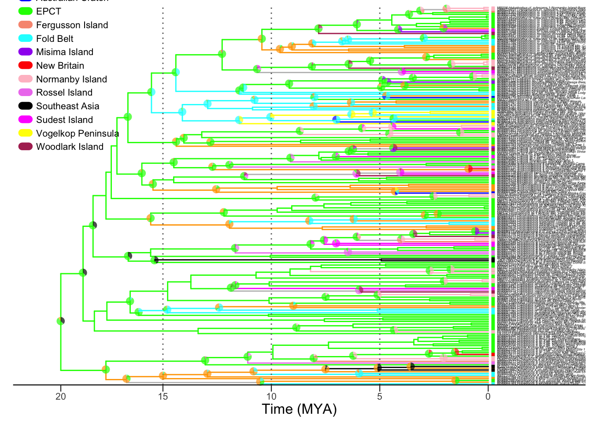

knitr::read_chunk('biogeog.R')
knitr::read_chunk('biogeog_functions.R')
knitr::read_chunk('tree_plotting_DEC.R')
knitr::read_chunk('genera_thru_time.R')Analyses for Testing geology with biology: Plate tectonics and the diversification of microhylid frogs in the Papuan region
This Quarto document provides a walk through of the analyses used in Hill (2023a), which explored biogeographic explanations for the hyper-diversity of the asterophryne frogs of the Papuan region. This study analyzed a phylogenetic tree with 218 tips found throughout the Papuan region in 13 georegions (tree and data previously published in Hill et al. 2022, 2023b). We fit DEC models of geographical range evolution along a phylogeny using the BioGeoBEARS package. These models estimate the rates of dispersal, extinction, and cladogenesis, and estimate ancestral georegions at each node of the tree. Because we use a time-calibrated phylogeny, we can reconstruct the timing of range shifts between georegions along the phylogeny and test hypotheses of geology involving plate tectonic movements.
This script is written to fit DEC models with all of the inputs saved to the data folder. Most of the primary data is pulled in from the permanent GitHub repository linked to https://doi.org/10.5281/zenodo.7063168.
The functions are written generically, and could be reused to test other hypotheses or datasets by changing the input files below with minor code editing of the script. For example, because all of our species occupy single georegion ranges, we do not use DEC-J, and we limit the maxmimum number of simultaneous ranges to two (the minimum number). These are options that can be changed.
The geological hypotheses we test are specified in the setup of the following data matrices and files. Please see Nick Matzkeʻs BioGeoBEARS wiki and Matzke (2013) for explanation of these inputs, and Hill et al. (2023a) for explanation of the geological hypotheses.
File in data |
Contents |
|---|---|
geobins.txt |
tip labels (matching the tree) and the present-day geographical region of the taxa |
biogeo.tree |
the phylogenetic tree - disable reading from the GitHub repo if you want to substitute the tree |
dispersal_matrices\hyp.txt |
dispersal matrices associated with the hypotheses |
areas_allowed/hyp.txt |
areas allowed matrices. Files should be named according to the name of the hypothesis |
time_periods/hyp.txt |
time periods associated with time-stratified hypotheses, these require associated areas allowed matrices |
hypotheses.csv |
a master data frame that associates hypotheses names, hypotheses short codes, and the names of their associated dispersal, time_periods, and areas_allowed files (if any) |
georegion_colors.csv |
custom colors, codes, and pretty names associated with the georegions |
sensitivity_trees/tree_X.nwk |
a sample of phylogenetic trees to run sensitivity analyses for phylogenetic uncertainty - replace with your own best trees if you want to do this on your own data |
Setup and Reproducibility
The analysis can be reproduced by running or sourcing the three R scripts below (biogeog_functions.R is sourced in biogeog.R), or by rerunning this single quarto document, which is written to pull the following R scripts into memory so that the code chunks can be used in the document below.
Biogeography analyses biogeog.R
Load needed packages to run the DEC models.
library(BioGeoBEARS)
# installed from https://github.com/nmatzke/BioGeoBEARS/tree/master
# version number 1.1.3
library(treeio)
library(ape)Load custom functions into memory.
### Load functions to run BioGeoBEARS models
source("biogeog_functions.R")The functions include:
biogeo_obj(): Creates the input object for running BioGeoBEARS models
hypothesis_list(): Assembles a list of hypotheses to run through BioGeoBEARS models conveniently.
"%w/o%": Returns the vector elements of X without Y.
logLik.bgb(): Returns the log likelihood from BioGeoBEARS model output.
AIC.bgb()Returns the AIC value from BioGeoBEARS model output.
model_fit_table(): Creates a model fit table from a list of BioGeoBEARS model outputs.
More details on these functions are explained at the end of this document.
Gather the inputs for BioGeoBEARS
The ARGUMENTS to BioGeoBEARS are file names with paths to the file locations, as follows:
| Name in current script | BioGeoBEARS name | Explanation |
|---|---|---|
| treefile | trfn | tree in nexus format |
| geo | geogfn | geographic data, here in PHYLIP format |
| disperal | dispersal_multipliers_fn | dispersal multiplier matrix |
| timeperiods | timesfn | time stratification matrix |
| areasallowed | areas_allowed_fn | areas allowed matrix |
| hdat | The hypotheses.csv file contains an organizational dataframe to keep track of all of the parts for each hypothesis: names and codes for our custom hypotheses, along with the associated dispersal, timeperiods, and areas allowed matrices, if any |
In our repository, these files are in the data folder.
Load the basic model inputs
To see the structure of BioGeoBEARS model input (see Table 1), open the text files in the data folder.
Note that we are accessing a published phylogeny from a GitHub repository, but in order to run BioGeoBEARS, we write the file to our data directory. If you want to run it on a different tree, you can edit the code treefile to point to your own tree file.
#######################
# Gather the inputs
#######################
# The tree comes from Hill et al 2022 and Hill et al 2023
# and is converted to phylo format for use with BioGeoBEARS
treefile = "https://github.com/mbutler808/Asterophryinae_phylogenetic_data/blob/main/BEAST2_analysis/beast_218_tree_asterophryinae.nex?raw=TRUE"
tree <- read.beast(treefile) %>% as.phylo
write.tree(tree, "../data/biogeo.tree")
treefile = "../data/biogeo.tree"
geo = "../data/geobins.txt"
hdat = read.csv("../data/hypotheses.csv")
hypotheses <- hdat$hypothesis
names(hypotheses) <- hdat$idBecause we have a lot of models of different types, it is convenient to organize the hypotheses into groups by whether or not they are unconstrained, time-stratified, or have dispersal matrices (including time-stratified), because they have different inputs. Each of these vectors contains the hypothesis codes for their group.
hyp_un <- hdat$id[ hdat$dispersal_multipliers=="" ] # unconstrained
hyp_ts <- hdat$id[ hdat$time_periods!="" ] # time-stratified
hyp_dm <- hdat$id[ !hdat$id %in% hyp_un ] # with dispersal matrices (includes ts)hyp_dm [1] "a" "b" "c" "d" "e" "f" "g" "h" "i" "j" "k" "l"hyp_ts [1] "j" "k"hyp_un [1] "DEC"Create model inputs as vectors.
# paths to model inputs
dispersal <- paste("../data/dispersal_matrices/",
hdat$dispersal_multipliers,
".txt",
sep="")
timeperiods <- paste("../data/time_periods/",
hypotheses,
".txt",
sep="")
areasallowed <- paste("../data/areas_allowed/",
hypotheses,
".txt",
sep="" )
names(dispersal) <- names(areasallowed) <- names(timeperiods) <- names(hypotheses)
# remove empty filenames, just to be safe
dispersal <- dispersal[hyp_dm]
timeperiods <- timeperiods[hyp_ts]
areasallowed <- areasallowed[hyp_ts]dispersal a
"../data/dispersal_matrices/slow_and_steady.txt"
b
"../data/dispersal_matrices/current_connectivity.txt"
c
"../data/dispersal_matrices/louisiade_archipelago.txt"
d
"../data/dispersal_matrices/woodlark_with_louisiade.txt"
e
"../data/dispersal_matrices/owen_stanleys.txt"
f
"../data/dispersal_matrices/historical_owen_stanleys.txt"
g
"../data/dispersal_matrices/offshore_with_epct.txt"
h
"../data/dispersal_matrices/offshore_with_nearest_mainland.txt"
i
"../data/dispersal_matrices/offshore_with_accreted.txt"
j
"../data/dispersal_matrices/mobile_belt.txt"
k
"../data/dispersal_matrices/recent_emergence.txt"
l
"../data/dispersal_matrices/distance.txt" timeperiods j
"../data/time_periods/mobile_belt.txt"
k
"../data/time_periods/recent_emergence.txt" areasallowed j
"../data/areas_allowed/mobile_belt.txt"
k
"../data/areas_allowed/recent_emergence.txt" Create BioGeoBEARS input objects
Now we are ready to run the BioGeoBEARS functions to create input objects. These are stored as a named list, named by the hypothesis.
##############################################
## Create BioGeoBEARS input objects
##############################################
# inputs are vectors created above
h <- hypothesis_list( hyp_dm, # names of dispersal multiplier hypotheses
hyp_ts, # time-stratified hypotheses
hyp_un, # unconstrained hypotheses
treefile, # paths to treefile
geo, # paths to geobins file
dispersal, # paths to dispersal matrices files
timeperiods, # paths to time periods files
areasallowed # paths to areas allowed files
)
1- top: 0, bot: 12, rel_bot: 12
2- top: 12, bot: 30, rel_bot: 18
1- top: 0, bot: 5, rel_bot: 5
2- top: 5, bot: 30, rel_bot: 25Run the models
This code will run all of the models in the list. It takes about 20 minutes on my laptop. If you want to just run one model, follow the commented out version instead.
#######################
# Run the models
#######################
# run all the models
fit <- lapply( h, bears_optim_run )
# run one model at a time
# fit1 <- bears_optim_run(hyp[["a"]])
# fit2 <- bears_optim_run(hyp[["b"]])Save model output
Gather the scores for each model and put them into a table scores. It is sorted by AIC score, so the first one is the best model.
##############################################
# Collect the model fit statistics
##############################################
scores <- model_fit_table(fit)
best_id <- scores$id[1]
best_fit <- fit[[best_id]]
scores id hypotheses delta_aic m2logL df dispersal
h h offshore_with_nearest_mainland 0.000000 996.2568 2 0.009388873
g g offshore_with_epct 5.506394 1001.7632 2 0.008647029
f f historical_owen_stanleys 10.030803 1006.2876 2 0.009638641
DEC DEC unconstrained_DEC 23.230091 1019.4868 2 0.004623482
e e owen_stanleys 76.043722 1072.3005 2 0.011050733
l l distance 118.091669 1114.3484 2 0.017728540
i i offshore_with_accreted 188.220107 1184.4769 2 0.018771637
d d woodlark_with_louisiade 289.061658 1285.3184 2 0.027070428
c c louisiade_archipelago 338.049377 1334.3061 2 0.028144200
a a slow_and_steady 382.792484 1379.0492 2 0.030117978
j j mobile_belt 402.431695 1398.6885 2 0.034276253
b b current_connectivity 435.806608 1432.0634 2 0.017430099
k k recent_emergence 691.469531 1687.7263 2 0.092944968
extinction
h 0.02061541
g 0.02057898
f 0.02037073
DEC 0.01802977
e 0.02073542
l 0.02551608
i 0.03370028
d 0.02489728
c 0.02335633
a 0.02322942
j 0.02846149
b 0.01954069
k 0.05890621Finally, save the model outputs into the results/models folder for use later. .rds files are in R format, whereas .csv is a text format readable by spreadsheet programs.
##############################################
# Save model fit results
##############################################
saveRDS(
fit,
file="../results/models/hyp_fits.rds"
) # model fits as R objects
saveRDS(
best_fit,
file="../results/models/best_fit.rds"
)
write.csv(
scores,
"../results/models/modelfittable.csv",
row.names = F, quote = F
) # scores, parametersPrepare ancestral states probabilities for plots
Consolidate probabilities for pie charts showing range transitions. BioGeoBEARS creates multi-area probabilities by default, and the fewest possible areas allowed is two. Since our frogs are low-disperal species that occupy only one georegion (i.e., they are single-area species), we consolidate these dual-area probabilities to single areas by summing half of each dual-area probability with their single area probabilities.
statenames <- names(
best_fit$inputs$list_of_dispersal_multipliers_mats[[1]]
) # vector of georegion codes
probs <- as.data.frame(
best_fit$ML_marginal_prob_each_state_at_branch_top_AT_node
) # the probabilities
names(probs) <- c(
"0",
statenames,
apply(
combn(statenames,2),
2,
paste,
collapse=""
)
) # the BioGeoBEARS probability matrix has the null prob,
# single state probs, followed by multi-state probs
pies <- probs[1:(length(statenames)+1)] # the first set are single-areas
for (ii in 1:length(statenames)) { # parse the multi-areas
tt <- grep(statenames[ii], names(probs)) # pointers to state names
# for each pie, after the null state, we sum the single-area pie
# with half of each of the two-area pies
# (n = south east asia)
pies[ii+1] <- probs[tt[1]] + rowSums(0.5*probs[tt[-1]])
}
write.csv(pies, "../results/models/prob_pies_13.csv", row.names=F)
EXPLANATION:
The trick is to find the label rows with each georegion letter, say “n”:
n <- grep(“n”, column_labels)
Then use that index to add the partial probabilities together. The first occurance of the state name is the single-area probability. To that we add the partial probability of each double-letter area
We split the dual area probability 50-50 between the two areas:
pies[2] <- probs[n[1]] + rowSums(0.5*probs[n[-1]]) # n (south east asia)
The first statename correspponds to the second column of the probs matrix, as the first column is the null probability
Plot BioGeoBEARS pie charts on the phylogeny
This produces the default BioGeoBEARS plot output.
##############################################
# Plot BioGeoBEARS pie charts
##############################################
# out <- readRDS("../../results/models/hyp_fits.rds")
# scores <- read.csv("../../results/models/modelfit.csv")
pdf(file = "../results/h_DEC.pdf", height = 45, width = 20)
plot_BioGeoBEARS_results( best_fit,
plotwhat = "pie",
splitcex=.4,
statecex=.4,
plotlegend = T,
plotsplits = F
) LnL nparams d e
1 -498.1284 2 0.009388873 0.02061541 plot_BioGeoBEARS_results( best_fit,
plotwhat = "text",
splitcex=.4,
statecex=.4,
plotlegend = T,
plotsplits = F
)


LnL nparams d e
1 -498.1284 2 0.009388873 0.02061541dev.off()pdf
3 ##############################################Sensitivity analysis
Warning! This will take over 30 hours to complete. To run this, set this flag to true in biogeog.R (near the top of the script) and source the script.
### Do we want to run sensitivity analysis on 100 best trees?
run_sensitivity_analysis = FALSE # Will take ~30 hours of run timeIt runs the complete analysis 100 times, once on each of the sample of 100 best trees stored in data.
# Checks the effect of phylogenetic uncertainty by
# repeating analysis on each of 100 trees from
# the end of the BEAST run
##############################################
if( run_sensitivity_analysis ) { # Will take 30 hours of run time
# Save the scores from best models, observed + 100 trees
# First row is the observed result
best_models <- read.csv("../results/models/modelfittable.csv")[1,]
best_models <- cbind(best_models, "tree"=treefile) # Add tree path
write.table( best_models,
"../results/models/modelfit_sensitivity.csv",
quote=FALSE,
sep=",",
row.names=FALSE
)
# Top 100 trees from BEAST analysis
# All other inputs remain the same
trees <- list.files(
"../data/sensitivity_trees",
full.names = TRUE
) # vector of tree files
### Interate over trees: assemble hypotheses, run models, print scores
for (tree in trees) {
print(paste("Analyzing tree:", tree))
h <- hypothesis_list( hyp_dm, hyp_ts, hyp_un, tree, geo,
dispersal, timeperiods, areasallowed)
fit <- lapply( h, bears_optim_run )
scores <- cbind( model_fit_table(fit), "tree"=tree )
write.table( scores[1,],
"../results/models/modelfit_sensitivity.csv",
append=TRUE,
quote=FALSE,
sep=",",
row.names=FALSE,
col.names=FALSE
)
}
}Biogeography functions biogeog_functions.R
These are the custom functions used in biogeog.R and the above.
In these functions, we follow the BioGeoBEARS naming convention when using their functions, for our sanity. (Even though these are really long names!)
trfn= tree in nexus format
geogfn= geographic data, in PHYLIP format
dispersal_multipliers_fn= dispersal multiplier matrix
timesfn= time stratification matrix
areas_allowed_fn= areas allowed matrix
biogeo_obj()
This function is a wrapper for the BioGeoBEARS function define_BioGeoBEARS_run to create input objects for a given hypothesis. It returns the assembled BioGeoBEARS input object.
If it is a time-stratified model or a model with dispersal multipliers, it loads the appropriate inputs. All the use has to do is set up the model inputs correctly in the data directory, with the entries of hypothesis.csv corresponding to file names in the data folder.
We chose max_range_size=2 and commonly recommended options to make it run.
##############################################
### Function to assemble BioGeoBEARS input object
### returns BioGeoBEARS obj
##############################################
biogeo_obj <- function(
trfn,
geogfn,
dispersal_multipliers_fn = NA,
timesfn = NA,
areas_allowed_fn = NA
){
x = define_BioGeoBEARS_run(
trfn=trfn,
geogfn=geogfn,
dispersal_multipliers_fn = dispersal_multipliers_fn,
timesfn = timesfn,
areas_allowed_fn = areas_allowed_fn,
max_range_size = 2,
min_branchlength = 0.000001,
include_null_range = TRUE,
num_cores_to_use = 1,
force_sparse = FALSE
)
# This function loads inputs (e.g., dispersal multiplier matrix)
# into the model object, and runs some checks. Required for models to run.
x = readfiles_BioGeoBEARS_run(x)
x$return_condlikes_table = TRUE
x$calc_TTL_loglike_from_condlikes_table = TRUE
x$calc_ancprobs = TRUE
if( !is.na(timesfn) & !is.na(areas_allowed_fn)) x=section_the_tree(inputs=x, make_master_table=TRUE, plot_pieces=FALSE) # if time stratified
return(x)
}hypothesis_list()
This function builds the list of hypotheses. Since we have 13 hypotheses, it is convenient to assemble them into a list and then use Rʻs list utilities to run and process all of the models.
We include the three indicator vectors for dispersal multipler models hyp_dm, time-stratified models hyp_ts, and unconstrained models hyp_un so that the function can assemble the appropriate parts.
##############################################
### Function to build list of all hypotheses in an analysis
### returns a list
##############################################
hypothesis_list <- function( hyp_dm, hyp_ts, hyp_un, tree,
geo, dispersal,
timeperiods,
areasallowed ) {
# models with dispersal multipliers only
h <- lapply( hyp_dm %w/o% hyp_ts,
function(x) biogeo_obj(
trfn=tree,
geogfn=geo,
dispersal_multipliers_fn = dispersal[x]
)
)
names(h) <- hyp_dm %w/o% hyp_ts
# no dispersal multipliers
h[[hyp_un]] <- biogeo_obj(trfn=tree, geogfn=geo)
# dispersal multipliers and time-stratification
hts <- lapply( hyp_ts,
function(x) biogeo_obj(
trfn=tree,
geogfn=geo,
dispersal_multipliers_fn = dispersal[x],
timesfn = timeperiods[x],
areas_allowed_fn = areasallowed[x]
)
)
names(hts) <- hyp_ts
# combine the hypotheses into one list
h <- c(h, hts)
return(h)
}Accessory functions
Accessor functions for grabbing the log-likelihood and AIC values from the BioGeoBEARS model fit objects.
The input (x) is a BioGeoBEARS model fit.
##############################################
### Model Fit statistics accessors
##############################################
logLik.bgb <- function( x ) {
return( x$total_loglikelihood )
}
AIC.bgb <- function( x, df =2 ) {
L <- logLik.bgb(x)
a <- getAIC(LnL = L, df)
return(a)
}
# getAIC is a BioGeoBears function:
# computes AIC=−2loglikelihood+kn, where k=2 for usual AIC. n=npar
# getAIC <- function (LnL, numparams)
# {
# AICval = 2 * numparams - 2 * LnL
# return(AICval)
# }This is a very convenient function for comparing two vectors and returning the members of X that are not in Y:
##############################################
# y without y function:
##############################################
"%w/o%" <- function(x,y) { x[ !(x %in% y) ]}model_fit_table()
This function collects the model fit statistics for all of the hypotheses: the log likelihoods and AIC statistics, computes the delta AICs, sorts the hypotheses by fit, and returns a score table.
##############################################
### Collect Model fits and parameters from
### BioGeoBEARS output object
### returns dataframe
##############################################
model_fit_table <- function( fit ) {
logL <- sapply( fit, logLik.bgb )
df <- 2 # all models have df=2
aic <- sapply( fit, AIC.bgb )
disp <- sapply( fit, function(x) return(x$outputs@params_table[1,5]) )
ext <- sapply( fit, function(x) return(x$outputs@params_table[2,5]) )
# Write AIC, logL, df to dataframe
scores <- data.frame(id=names(aic),
hypotheses=hypotheses[names(aic)],
delta_aic=aic-min(aic),
m2logL=-2*logL,
df,
dispersal=disp,
extinction=ext
)
scores <- scores[order(scores$delta_aic),]
return(scores)
}Plot Biogeographical Evolution Tree tree_plotting_DEC.R
This code produces Figure 4 in the manuscript using ggtree (Yu 2022).
Tree branches are painted by majority rule of the ancestral terrane. Pies represent probabilities of ancestral states at nodes
Model outputs produced in biogeog.R. The tree and geographical data comes from Hill et al. (2022) and Hill et al. (2023b) and is converted to phylo format for use with BioGeoBEARS https://github.com/mbutler808/Asterophryinae_phylogenetic_data/blob/main/BEAST2_analysis/beast_218_tree_asterophryinae.nex?raw=TRUE"
inputs:
- tree in phylo format “../data/biogeo.tree”
- georegion metadata https://github.com/mbutler808/Asterophryinae_phylogenetic_data/blob/main/Table1.csv?raw=TRUE
- statenames, codes, colors “../data/georegion_colors.csv”
- ancestral state probabilities “../results/models/prob_pies_13.csv”
outputs:
- figure “../results/manuscript_tree_DEC.pdf”
Load needed packages to run the DEC models.
# Required Packages
library(dplyr)
library(ggplot2)
require(ggtree)
library(treeio)
# x without y function:
"%w/o%" <- function(x, y) x[!x %in% y ]
#################################################
# Read and arrange inputs #
#################################################Read inputs
We read the tree in and covert it to a dataframe tree.data using treeio.
The metadata (tip label and terrane) are read into dat, and the terranes are edited to make nice names, filtered to drop any that are not in the tree, and finally only the labels and terrane is kept, dropping all of the uncessary fields.
#################################################
# Load the tree
# Tree in phylo format is converted to a dataframe
tree <- read.tree("../data/biogeo.tree")
tree.data <- tree %>% as_tibble %>% as.data.frame
istip <- !is.na(tree.data$label)
#################################################
# Load terrane data for tips
# edits terrane names, subsets by tips in the tree
dat <- read.csv("https://github.com/mbutler808/Asterophryinae_phylogenetic_data/blob/main/Table1.csv?raw=TRUE") %>%
select(label, terrane, locality, site) %>%
mutate(terrane = ifelse(terrane=="dentrecasteaux", locality, terrane)) %>%
mutate(terrane = gsub("epct", "EPCT", terrane)) %>%
mutate(terrane = gsub("accreted", "Accreted Terranes", terrane)) %>%
mutate(terrane = gsub("fold", "Fold Belt", terrane)) %>%
mutate(terrane = gsub("craton", "Australian Craton", terrane)) %>%
mutate(terrane = gsub("vogelkop", "Vogelkop Peninsula", terrane)) %>%
mutate(terrane = gsub("misima", "Misima Island", terrane)) %>%
mutate(terrane = gsub("sudest", "Sudest Island", terrane)) %>%
mutate(terrane = gsub("rossel", "Rossel Island", terrane)) %>%
mutate(terrane = gsub("woodlark", "Woodlark Island", terrane)) %>%
mutate(terrane = gsub("newbritain", "New Britain", terrane)) %>%
mutate(terrane = gsub("notpng", "Southeast Asia", terrane)) %>%
filter( label %in% as_tibble(tree.data)$label) %>% # drop any not in tree
mutate(labels = paste(label, locality, site, sep="-")) %>%
mutate(labels = gsub("_", " ", labels)) %>%
select(label, labels, terrane) # keep only label, terraneAdd georegions to tree.data
Merge the tree and metadata information together to get the terranes associated with the phylogeny.
####################################################
# Merge tree.data with dat to add terranes to tip labels and nodes
# 218 tips
tree.data.tips <- full_join(tree.data[istip,], dat, by = "label") %>%
as_tibble %>%
as.data.frame %>%
mutate(label2 = gsub("[-_]", " ", label)) %>% # clean version
select(node, label, terrane, label2, labels)Organize georegions names, colors
The user can specify the names and preferred colors in the dataframe georegion_colors.csv. This code reads in the information and makes index vectors for the names and their colors to be used in plotting. Adds an ambiguous category, and sorts aphabetically.
####################################################
# Load state names, state codes, and colors
sa <- read.csv("../data/georegion_colors.csv")
oo <- order(sa$states) # sort by state names Accreted, Australian, etc.
sa <- sa[oo,] # includes ambiguous
sn <- sa[sa$states!="Ambiguous",] # excludes ambiguousNode probabilities and pies
We assemble all of the information needed to annotate the tree into one dataframe. The georegion probabilities at the nodes were created by BioGeoBEARS and saved in prob_pies_13.csv above, with rows in node order. We read in this dataframe to merge with the tree dataframe so that we can plot the pies on the tree using ggtree. We also add the georegions and the colors to the tree dataframe so that we have all of the information organized by rows (nodes). All of this information is saved in the dataframe prob.
To reduce clutter on the tree, we only plot pies if they indicate some ambiguity (no need to plot 100% pies). showpie is a flag for nodes with ambiguity - to plot pies if the alternative georegions that have prob > 5%.
We use treeio (Yu 2022) to do the tree data manipulation, which expects the first column of the dataframe to contain the node number.
####################################################
# Load state probabilities at nodes
prob <- read.csv("../results/models/prob_pies_13.csv")[-1]
statenames <- names(prob)
prob$node <- as.integer(rownames(prob))
prob <- prob %>% relocate(node)
# Reassign statenames in prob with full names for georegions
oo <- sapply( names(prob)[-1], grep, sn$code ) # match codes, get order
names(prob)[-1] <- sn$states[oo] # assign full names in order
# Add branchcol = ancestral terranes, used for painting the branches
# Add showpie, plot pie if there are alternate georegions that have prob > 5%
prob <- prob %>% # the prob of each state
mutate( branchcol =
apply(
prob[sn$states],
1,
function(x) {
ifelse (
max(x) < 0.5,
"Ambiguous", # if no region is >50%, leave ambiguous
names(prob[sn$states])[x == max(x)]
)
}
)
) %>% # for branch color
mutate( showpie =
apply(
prob[sn$states], # no need to plot pies for single states (>95% prob)
1,
function(x) max(x)<.95
)
) # plot if prob<.95 head(prob) node Southeast Asia Vogelkop Peninsula Australian Craton Fold Belt
1 1 0 0 0 0
2 2 0 0 0 0
3 3 0 0 0 1
4 4 0 0 0 1
5 5 0 0 0 0
6 6 1 0 0 0
Accreted Terranes EPCT Normanby Island Fergusson Island Misima Island
1 1 0 0 0 0
2 1 0 0 0 0
3 0 0 0 0 0
4 0 0 0 0 0
5 1 0 0 0 0
6 0 0 0 0 0
Sudest Island Rossel Island Woodlark Island New Britain branchcol
1 0 0 0 0 Accreted Terranes
2 0 0 0 0 Accreted Terranes
3 0 0 0 0 Fold Belt
4 0 0 0 0 Fold Belt
5 0 0 0 0 Accreted Terranes
6 0 0 0 0 Southeast Asia
showpie
1 FALSE
2 FALSE
3 FALSE
4 FALSE
5 FALSE
6 FALSEOnce we have the probabilities of each georegion associated with each node, it is easy to create pies for each node.
We also merge the prob dataframe with the tree data by node. We now have all of the tree structure and metadata information in the tree and td objects. pies is a separate object to be used with the geom_inset to plot the pies on the tree.
####################################################
# Create objects for use with ggtree plots #
####################################################
# Generates the terrane pies for the nodes for use with ggplot
pies <- nodepie(
prob[!istip & prob$showpie,],
cols = (sn$states),
alpha = .7
)
pies <- lapply(
pies,
function(g) g+scale_fill_manual(values = sn$cols)
)
td <- full_join(
prob,
tree.data.tips,
by = "node"
) Plot phylogeny with pies using ggtree
ggtree (Yu 2022) extends ggplot2 (Wickham 2016) for elegantly plotting phylogenetic trees with annotations.
We use several geoms to create this plot, for tip labels, tip points, vertical lines, specifying custom colors with category names, axis breaks and labels, pies at the nodes, and customizing the legend. We create the base tree plot without the tip labels so that we can switch labels easily in the next code chunk.
The best way to see what they do is to comment out a line and see what it changes (or build them in one by one).
####################################################
## Plot biogeographical evolution tree with terrane pies (Fig 4)
##
## Use theme_get() to see theme options
####################################################
p <- ggtree(tree, aes(color=branchcol), size=.5) %<+% td +
geom_tippoint( aes(color = terrane, x=x+.22), # georegions on tip points
shape=15,
size = 1,
show.legend = F) +
geom_vline( xintercept = c(4.71, 9.71, 14.71), # vertical lines for time periods
linetype = "dotted",
linewidth = .5,
color = "grey40") +
scale_color_manual( values = sa$cols ) + # specify georegion colors
scale_x_continuous( limits = c(-1, 23), # x-axis tick placements
breaks = c(0, 4.71, 9.71, 14.71, 19.71),
labels = c(20, 15, 10, 5, 0)) +
theme( legend.position=c(0.1,.88), # customize the legend placement, text, title size
legend.text=element_text(size=8), # size of georegion categories
legend.title=element_text(size=12), # title size
legend.key.size = unit(.8, 'lines'), # key size
legend.key.width = unit(.25, 'cm'), # key width
legend.spacing.x = unit(2, "mm"), # space between key and legend
legend.spacing.y = unit(0, "mm"), # space between lines
legend.background=element_blank(),
axis.ticks.x = element_line(linewidth = .4),
axis.text.x = element_text(size = 8),
axis.line.x = element_line(linewidth = .4),
axis.title.x = element_text(size = 12),
axis.ticks.length=unit(.2, "cm")
) +
guides( color =
guide_legend( override.aes=list(linewidth=3), # width of key line
title = "Terrane")
) + # customize legend line size
xlab("Time (MYA)") +
geom_inset( pies,
width = .07,
height = .07,
hjust = .08,
vjust = .4) # plot with multiple georegion probabilities
## save the base plot above and add the tip labels here
## for flexibility, so we can easily swap out later
q <- p + geom_tiplab( aes(label=label2), # tip labels
color = "black",
size = 1,
offset = .3,
fontface = 3)
pdf(file = "../results/Fig4_DEC.pdf", height = 10, width = 7)
print(q)
dev.off() quartz_off_screen
2 q
We also can plot the site names on the tree for more detail. That involves simply swaping out the label (label2 for labels) in geom_tiplab.
r <- p + geom_tiplab( aes(label=labels), # tip labels
color = "black",
size = 1,
offset = .3,
fontface = 3)
pdf(file = "../results/Fig4_DEC_sites.pdf", height = 10, width = 7)
print(r)
dev.off() quartz_off_screen
2 r
Plot range transitions through time genera_thru_time.R
This block of code produces the data plot inset for figure 5. It plots the timing of each georegion transition by genus (time on Y axis, genus on X axis), organized by terrane. This figure is then placed into a composite figure made in Illustrator by hand with map elements and additional labels.
Load needed packages to run the DEC models.
# Required Packages
library(ggplot2)
library(tidyverse)
library(ggpubr)
library(forcats)Input data
This data was compiled by hand from the phylogeny and saved in the spreadsheet genera_thru_time2.csv.
# Reads in the data frame and orders the transition states in plotting order
datall <- read.csv("../data/genera_thru_time2.csv")
datall$Direction <- factor( datall$Direction,
c( "E/A", "E/F", "E/R", "E/W",
"E/S", "E/M", "E/G", "E/N",
"E/B", "A/F", "A/C", "A/B",
"F/V", "F/A", "F/C", "F/E",
"V/C","V/F"
)
)We sort the data by time and by georegion to reveal the pattern of coincidence of multiple events by time and space.
# Sorts the groupings of transitions by time of dispersal events
temp <- reorder(datall$Group, datall$Time)
datall$Group <- factor(datall$Group, levels(temp))
datall$Genus_unique <- datall$Genus
datall$Genus <- sub("[0-9.]+", "", datall$Genus)
# Generates the plotting order for genera
plotlab <- datall$Genus[seq(1, length(datall$Genus), 3)]Plot the dispersals
Generates the plot of dispersal events using ggplot2.
Note: The unique factor order had to be manually converted to clade names to represent the custom plotting order based on terrane specific dispersal events on the x-axis
# Generates the plot of dispersal events
# Note: The unique factor order had to be manually converted to clade names to
# represent the custom plotting order based on terrane specific dispersal
# events on the x-axis
fig <- datall %>%
ggplot( aes( x = reorder( Group, desc(Group) ), y = Time ) ) +
geom_hline( yintercept = c(20, 15, 10, 3), linetype = "dotted", color = "black") +
geom_line( aes(group = Group, colour = Direction ), linewidth = .8, lineend = "round") +
geom_point( aes( colour = Direction ), data=subset( datall[ seq( 3, nrow(datall), 3), ] ), size = 4) +
scale_x_discrete(labels = c(
"1" = "Oreophryne A",
"2" = "Oreophryne A",
"3" = "Oreophryne A",
"4" = "Cophixalus",
"5" = "Cophixalus",
"6" = "Choerophryne",
"7" = "Choerophryne",
"8" = "Austrochaperina B",
"9" = "Austrochaperina B",
"10" = "Austrochaperina A",
"11" = "Liophryne",
"12" = "Sphenophryne",
"13" = "Asterophrys",
"14" = "Asterophrys",
"15" = "Asterophrys",
"16" = "Asterophrys",
"17" = "Asterophrys",
"18" = "Xenorhina",
"19" = "Xenorhina",
"20" = "Xenorhina",
"21" = "Xenorhina",
"22" = "Xenorhina",
"23" = "Callulops",
"24" = "Callulops",
"25" = "Mantophryne",
"26" = "Hylophorbus",
"27" = "Hylophorbus",
"28" = "Hylophorbus",
"29" = "Hylophorbus",
"30" = "Oreophryne A",
"31" = "Oreophryne A",
"32" = "Oreophryne A",
"33" = "Oreophryne A",
"34" = "Paedophryne",
"35" = "Cophixalus",
"36" = "Cophixalus",
"37" = "Cophixalus",
"38" = "Cophixalus",
"39" = "Cophixalus",
"40" = "Cophixalus",
"41" = "Oreophryne B",
"42" = "Oreophryne B",
"43" = "Oreophryne B",
"44" = "Oreophryne B",
"45" = "Oreophryne B",
"46" = "Oreophryne B",
"47" = "Austrochaperina C",
"48" = "Barygenys",
"49" = "Barygenys",
"50" = "Barygenys",
"51" = "Austrochaperina A",
"52" = "Austrochaperina A",
"53" = "Copiula",
"54" = "Copiula",
"55" = "Copiula",
"56" = "Copiula",
"57" = "Liophryne",
"58" = "Genyophryne",
"59" = "Genyophryne",
"60" = "Callulops",
"61" = "Callulops",
"62" = "Mantophryne",
"63" = "Mantophryne",
"64" = "Mantophryne",
"65" = "Mantophryne",
"66" = "Hylophorbus",
"67" = "Hylophorbus",
"68" = "Hylophorbus",
"69" = "Hylophorbus",
"70" = "Hylophorbus"
)
) +
theme( axis.line.x = element_line(),
axis.line.y.left=element_line(),
panel.background=element_blank(),
panel.border=element_blank(),
panel.grid.major=element_blank(),
panel.grid.minor=element_blank(),
plot.background=element_blank(),
axis.title.x = element_blank(),
legend.position="none",
axis.text.x = element_text( angle = 90, size = 9 ),
panel.spacing.x = unit( .25, "lines"),
strip.background.x = element_rect( linewidth = .5, color = "black" ),
axis.text.y = element_text( size = 25 ),
axis.title.y = element_text( size = 25 ),
axis.text.x.bottom = element_text( vjust = .5, hjust = 1 )
) +
scale_color_manual( values=c( "orange", "cyan", "violet", "maroon",
"magenta", "purple", "#F89880", "pink",
"red", "cyan", "blue", "red",
"yellow", "orange", "blue", "green",
"blue", "cyan"
)
) +
labs( y = ("Time (Ma)") ) +
facet_grid( cols = vars( Direction ),
scales = "free",
space = "free"
) +
theme( strip.text =
element_text( color = NA,
margin = margin( .5,0,.5,0, "cm" )
)
)
# Writes the plot to pdf
pdf( file = "../results/Fig5_plot.pdf", height = 16, width = 12)
print(fig)
dev.off()quartz_off_screen
2 fig
References
Hill, E. C., C. J. Fraser, D. F. Gao, M. J. Jarman, E. R. Henry, B. Iova, A. Allison, and M. A. Butler. 2022. Resolving the deep phylogeny: Implications for early adaptive radiation, cryptic, and present-day ecological diversity of papuan microhylid frogs. Molecular Phylogenetics and Evolution 177:107618.
Hill, E. C., D. F. Gao, D. A. Polhemus, C. J. Fraser, B. Iova, A. Allison, and M. A. Butler. 2023a. Testing geology with biology: Plate tectonics and the diversification of microhylid frogs in the papuan region. Integrative Organismal Biology.
Hill, E. C., M. J. Jarman, C. J. Fraser, D. F. Gao, E. R. Henry, A. R. Fisher, B. Iova, A. Allison, and M. A. Butler. 2023b. Molecular and phylogenetic datasets for the asterophryinae frogs of new guinea with additional data on lifestyle, geography, and elevation. Data in Brief 47:108987.
Matzke, N. J. 2013. BioGeoBEARS: BioGeography with bayesian (and likelihood) evolutionary analysis in r scripts. University of California, Berkeley, Berkeley, CA.
Wickham, H. 2016. ggplot2: Elegant graphics for data analysis. Springer-Verlag New York.
Yu, G. 2022. Data integration, manipulation and visualization of phylogenetic treess. 1st edition. Chapman; Hall/CRC.